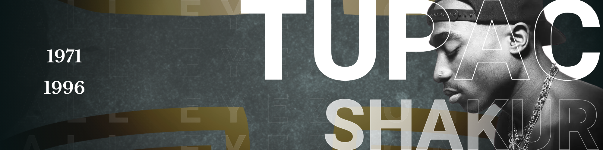

Hip-Hop: O Som da Voz e do Asfalto
O Hip-Hop não é apenas um gênero musical; é um ecossistema cultural nascido da necessidade visceral de autoafirmação. Enquanto as luzes das discotecas brilhavam no centro de Nova York nos anos 70, o Bronx — assolado pelo descaso econômico — forjava uma revolução silenciosa nos toca-discos. O que começou em 11 de agosto de 1973, na famosa festa de DJ Kool Herc, foi o nascimento de uma nova gramática sonora: o breakbeat.
Ao isolar a seção rítmica de discos de Funk e Soul, o Hip-Hop criou um espaço onde a batida era soberana, permitindo que o corpo (através do Breaking) e a voz (através do MCing) ocupassem o vazio deixado pela falta de instrumentos tradicionais.
A Alquimia dos Quatro Elementos
A estrutura do Hip-Hop é sustentada por um quadrilátero fundamental que une o auditivo, o visual e o cinético:
- O DJ (Disc Jockey): O alquimista que manipula o tempo e o vinil, transformando o passado musical em algo inteiramente novo através do sampling.
- O MC (Master of Ceremonies): O poeta da metrópole que utiliza o fluxo rítmico (o flow) para narrar crônicas de sobrevivência, ostentação e protesto.
- O Graffiti: A caligrafia urbana que reivindica o espaço público, transformando muros cinzentos em manifestos visuais de existência.
- O Breaking: A manifestação física da batida, onde o corpo desafia a gravidade em uma dança de combate e expressão.
Ao longo das décadas, o gênero metamorfoseou-se. Nos anos 80, com o Public Enemy e N.W.A, tornou-se a "CNN dos guetos", expondo as fraturas sociais com uma agressividade necessária. Nos anos 90, atingiu o ápice do lirismo com a era de ouro de Nas, The Notorious B.I.G. e Tupac Shakur, provando que a rima poderia ser tão complexa quanto a literatura clássica.
Hoje, o Hip-Hop é a força gravitacional da cultura pop global. Do minimalismo sombrio do Trap às fusões experimentais do Jazz-Rap, ele continua a ser a ferramenta mais poderosa de mobilidade social e expressão identitária já criada. Ele não pede permissão; ele ocupa, transforma e dita o ritmo do mundo moderno.
Veja abaixo, alguns dos álbuns mais populares do hip-hop.


Explore mais desse estilo! →
©2026 Kamusic. Todos os direitos reservados.